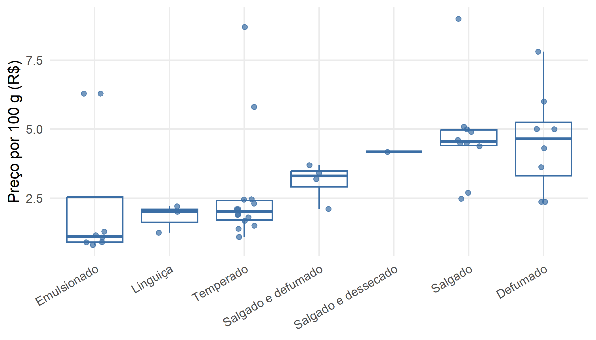
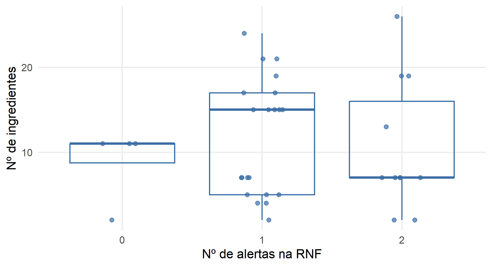
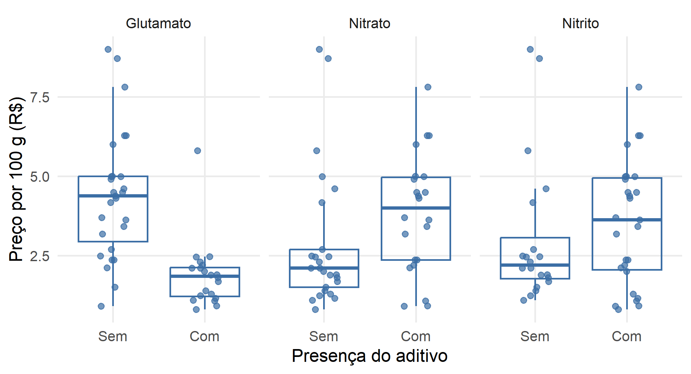

| Subgrupo | n | Média (DP) | Mediana (Q1–Q3) | Mín–Máx |
|---|---|---|---|---|
| Defumado | 8 | 4,55 (1,84) | 4,65 (3,31–5,25) | 2,36–7,80 |
| Emulsionado | 8 | 2,34 (2,44) | 1,11 (0,91–2,54) | 0,80–6,28 |
| Linguiça | 3 | 1,81 (0,51) | 2,00 (1,62–2,10) | 1,24–2,20 |
| Salgado | 10 | 4,71 (1,76) | 4,55 (4,41–4,97) | 2,48–8,99 |
| Salgado e defumado | 4 | 3,10 (0,69) | 3,30 (2,91–3,48) | 2,11–3,69 |
| Salgado e dessecado | 1 | 4,17 (–) | 4,17 (4,17–4,17) | 4,17–4,17 |
| Temperado | 14 | 2,65 (2,07) | 2,00 (1,71–2,41) | 1,09–8,70 |
| Total | 48 | 3,36 (2,08) | 2,47 (1,87–4,68) | 0,80–8,99 |
| Nota. Kruskal-Wallis: p = 0,005. DP = desvio padrão; Q1–Q3 = quartis. | ||||
Relações entre variáveis
Análises exploratórias pedidas no plano: preço × subgrupo; RNF × quantidade de ingredientes; e relações com a presença de nitrito, nitrato e glutamato. A amostra é pequena (48 produtos) e alguns subgrupos têm poucos itens, então os resultados descrevem esta amostra e não foram corrigidos para múltiplas comparações, exceto onde indicado. Nível de significância de 5%. Testes não paramétricos, porque as variáveis são assimétricas ou de contagem.
Preço × subgrupo
Teste de Kruskal-Wallis: H(6) = 18,42, p = 0,005, ε² = 0,39 (n = 48).
| Subgrupo 1 | Subgrupo 2 | p ajustado |
|---|---|---|
| Emulsionado | Salgado | 0,029 |
| Nota. Mostrados apenas os pares com p ajustado < 0,05 (1 de 21 pares). | ||
NotaInterpretação
O que o teste responde. O teste de Kruskal-Wallis compara o preço entre os subgrupos usando os postos dos valores (não exige distribuição normal). O valor de p é a probabilidade de ver diferenças tão grandes entre os subgrupos se, na verdade, todos tivessem a mesma distribuição de preço. O ε² mede o tamanho do efeito (a parcela da variação dos postos explicada pelo subgrupo). Esse teste global só diz se algum subgrupo difere; o teste de Dunn (com ajuste de Holm para as 21 comparações par a par) mostra quais.
Resultado. Kruskal-Wallis: H(6) = 18,42, p = 0,005, ε² = 0,39 (efeito grande). Como p < 0,05, há evidência de que o preço por 100 g difere entre os subgrupos: aproximadamente 39% da variação dos postos de preço está associada ao subgrupo. Nas comparações par a par, diferem após o ajuste: Emulsionado (mediana R$ 1,11) × Salgado (mediana R$ 4,55), p ajustado = 0,029. Os demais pares não diferiram de forma estatisticamente significativa, mas isso não significa que os preços sejam iguais: vários subgrupos têm de 1 a 4 produtos, e com amostras assim o teste tem pouco poder para detectar diferenças reais.

Rotulagem nutricional frontal (RNF) × nº de ingredientes
A RNF só é exigida em parte dos produtos (36 de 48); nos demais o nº de alertas é 0 por definição. Por isso a análise é feita nos produtos com RNF exigida e, como sensibilidade, em todos os produtos.
| Amostra | 0 alertas | 1 alerta | 2 alertas | Spearman (ρ) | p (Spearman) | p (Kruskal-Wallis) |
|---|---|---|---|---|---|---|
| RNF exigida | 11,0 [8,8–11,0] (n = 4) | 15,0 [5,0–17,0] (n = 21) | 7,0 [7,0–16,0] (n = 11) | 0,00 | 0,989 | 0,763 |
| Todos os produtos | 14,0 [11,0–16,0] (n = 16) | 15,0 [5,0–17,0] (n = 21) | 7,0 [7,0–16,0] (n = 11) | -0,12 | 0,431 | 0,717 |
| Nota. Células: mediana [Q1–Q3] do nº de ingredientes (n = produtos). ρ = correlação de Spearman entre nº de alertas e nº de ingredientes. | ||||||
NotaInterpretação
O que os testes respondem. A correlação de Spearman (ρ) varia de −1 a +1 e diz se produtos com mais alertas tendem a ter mais (ρ > 0) ou menos (ρ < 0) ingredientes; perto de 0 significa nenhuma tendência. O p testa se esse ρ é diferente de zero. O Kruskal-Wallis compara o nº de ingredientes entre os grupos de 0, 1 e 2 alertas.
Produtos com RNF exigida (análise principal) (n = 36): ρ = 0,00 (correlação fraca), p = 0,989; Kruskal-Wallis, p = 0,763. Não há evidência de relação entre o nº de alertas e o nº de ingredientes.
Todos os produtos (sensibilidade) (n = 48): ρ = -0,12 (correlação fraca), p = 0,431; Kruskal-Wallis, p = 0,717. Não há evidência de relação entre o nº de alertas e o nº de ingredientes.
Em ambas as análises o resultado vai na mesma direção, o que dá mais confiança à conclusão. Porém, ausência de evidência não é evidência de ausência: o grupo sem alerta, entre os produtos com RNF exigida, tem poucos produtos, então o teste só detectaria associações fortes. Na prática, nesta amostra, o número de ingredientes não prevê quantos alertas de RNF o produto terá.

Presença de nitrito, nitrato e glutamato
Para cada aditivo, compara-se o grupo com presença e o grupo sem presença quanto a preço, nº de ingredientes e nº de alertas na RNF (teste de Mann-Whitney; r = correlação bisserial por postos, positiva quando o valor é maior no grupo com presença). O nº de aditivos não entra, porque nitrito, nitrato e glutamato já fazem parte dessa contagem.
| Aditivo | Desfecho | Com presença | Sem presença | r | p |
|---|---|---|---|---|---|
| Glutamato | Preço por 100 g (R$) | 1,85 [1,22–2,13] (n = 20) | 4,38 [2,94–5,00] (n = 27) | -0,79 | <0,001 |
| Glutamato | Nº de ingredientes | 16,0 [15,0–19,0] (n = 20) | 7,0 [4,5–11,0] (n = 27) | 0,96 | <0,001 |
| Glutamato | Nº de alertas na RNF | 1,0 [0,0–1,0] (n = 20) | 1,0 [0,0–2,0] (n = 27) | -0,14 | 0,386 |
| Nitrato | Preço por 100 g (R$) | 4,00 [2,36–4,97] (n = 22) | 2,10 [1,50–2,69] (n = 25) | 0,36 | 0,037 |
| Nitrato | Nº de ingredientes | 7,0 [7,0–13,0] (n = 22) | 15,0 [4,0–17,0] (n = 25) | -0,25 | 0,145 |
| Nitrato | Nº de alertas na RNF | 1,0 [0,3–2,0] (n = 22) | 1,0 [0,0–1,0] (n = 25) | 0,17 | 0,276 |
| Nitrito | Preço por 100 g (R$) | 3,62 [2,06–4,95] (n = 27) | 2,20 [1,77–3,06] (n = 20) | 0,17 | 0,317 |
| Nitrito | Nº de ingredientes | 11,0 [7,0–16,0] (n = 27) | 15,0 [4,0–16,0] (n = 20) | -0,04 | 0,829 |
| Nitrito | Nº de alertas na RNF | 1,0 [1,0–2,0] (n = 27) | 1,0 [0,0–1,0] (n = 20) | 0,33 | 0,038 |
| Nota. Células: mediana [Q1–Q3]. p do teste de Mann-Whitney, sem correção para múltiplas comparações. | |||||
NotaInterpretação
O que o teste responde. O teste de Mann-Whitney compara dois grupos (com e sem o aditivo) usando os postos dos valores, sem supor distribuição normal. O p é a probabilidade de ver uma diferença tão grande entre os grupos se, na verdade, eles fossem iguais; com limite de 5%, p < 0,05 indica diferença estatisticamente significativa. O r mede o tamanho do efeito (de 0 a 1, em módulo: < 0,10 desprezível, 0,10–0,29 pequeno, 0,30–0,49 moderado, ≥ 0,50 grande) e o sinal mostra em qual grupo o valor é maior.
Diferenças estatisticamente significativas (p < 0,05, sem correção):
Glutamato × preço por 100 g (R$): 1,85 [1,22–2,13] vs 4,38 [2,94–5,00] (com × sem presença); p < 0,001; r = -0,79 (efeito grande). Os produtos sem presença do aditivo têm valores maiores.
Glutamato × nº de ingredientes: 16,0 [15,0–19,0] vs 7,0 [4,5–11,0] (com × sem presença); p < 0,001; r = 0,96 (efeito grande). Os produtos com presença do aditivo têm valores maiores.
Nitrato × preço por 100 g (R$): 4,00 [2,36–4,97] vs 2,10 [1,50–2,69] (com × sem presença); p = 0,037; r = 0,36 (efeito moderado). Os produtos com presença do aditivo têm valores maiores.
Nitrito × nº de alertas na RNF: 1,0 [1,0–2,0] vs 1,0 [0,0–1,0] (com × sem presença); p = 0,038; r = 0,33 (efeito moderado). Os produtos com presença do aditivo têm valores maiores.
Sem evidência de diferença (p ≥ 0,05): Glutamato × nº de alertas na RNF (p = 0,386), Nitrato × nº de ingredientes (p = 0,145), Nitrato × nº de alertas na RNF (p = 0,276), Nitrito × preço por 100 g (R$) (p = 0,317) e Nitrito × nº de ingredientes (p = 0,829).
Cuidado com múltiplas comparações. Foram feitos 9 testes ao mesmo tempo; com um limite de 5%, é esperado que cerca de 0,5 deles resultem “significativos” só por acaso. Aplicando o ajuste de Holm a todos eles, 2 permanecem significativos (Glutamato × preço por 100 g (R$) e Glutamato × nº de ingredientes). Os resultados com p entre 0,01 e 0,05 devem ser lidos como sugestivos, não como confirmação.
Duas ressalvas de leitura. (1) Glutamato × nº de ingredientes é em parte circular: o glutamato é, ele próprio, um ingrediente declarado, então produtos com glutamato têm mais ingredientes quase por construção. (2) Estas diferenças podem refletir o subgrupo do produto (ver a análise a seguir), e não o aditivo em si.

Presença de aditivos e subgrupo
| Subgrupo | Glutamato | Nitrato | Nitrito |
|---|---|---|---|
| Defumado | 0/8 (0) | 8/8 (100) | 8/8 (100) |
| Emulsionado | 5/8 (63) | 5/8 (63) | 8/8 (100) |
| Linguiça | 3/3 (100) | 1/3 (33) | 2/3 (67) |
| Salgado | 0/9 (0) | 4/9 (44) | 5/9 (56) |
| Salgado e defumado | 0/4 (0) | 4/4 (100) | 4/4 (100) |
| Salgado e dessecado | 0/1 (0) | 0/1 (0) | 0/1 (0) |
| Temperado | 12/14 (86) | 0/14 (0) | 0/14 (0) |
| p (Fisher) | <0,001 | <0,001 | <0,001 |
| Nota. Teste exato de Fisher (Freeman-Halton) com p estimado por simulação (100.000 réplicas), porque várias células têm contagem pequena. | |||
NotaInterpretação
O que o teste responde. O teste exato de Fisher (generalizado para mais de duas categorias) verifica se a proporção de produtos com o aditivo é a mesma em todos os subgrupos. O p é a probabilidade de ver diferenças de proporção tão grandes entre os subgrupos se o aditivo estivesse distribuído ao acaso; é calculado por simulação porque há muitas células com poucos produtos.
Glutamato: p < 0,001. A presença difere entre os subgrupos.
Nitrato: p < 0,001. A presença difere entre os subgrupos.
Nitrito: p < 0,001. A presença difere entre os subgrupos.
Por exemplo, o nitrito está presente em todos os produtos de Defumado, Emulsionado e Salgado e defumado, e em nenhum de Temperado; já o glutamato aparece em 86% dos produtos de Temperado e em nenhum de Defumado.
Consequência importante: como o subgrupo determina em grande parte quais aditivos o produto leva, o subgrupo é um fator de confusão nas comparações anteriores. Por exemplo, produtos com glutamato serem mais baratos pode refletir apenas que o glutamato é típico de subgrupos mais baratos, e não que o aditivo reduza o preço. Para separar os dois efeitos seria preciso uma análise ajustada pelo subgrupo (por exemplo, regressão), que exige uma amostra maior do que a disponível.
Associação entre os três aditivos
| Par | Ambos presentes | Odds ratio | IC 95% | (exp(β) − 1) × 100 (%) | p |
|---|---|---|---|---|---|
| Glutamato × Nitrato | 3/47 | 0,1 | 0,0 a 0,4 | -92 | <0,001 |
| Glutamato × Nitrito | 7/47 | 0,2 | 0,0 a 0,8 | -80 | 0,016 |
| Nitrato × Nitrito | 22/47 | ∞ | 14,0 a ∞ | ∞ | <0,001 |
| Nota. Odds ratio estimado condicional (Fisher); com contagens pequenas o IC é muito largo. ∞ = há uma casa da tabela 2×2 com zero produtos (nenhum produto com nitrato e sem nitrito), então o odds ratio não é finito. A coluna (exp(β) − 1) × 100 é a variação percentual da chance: positivo = chance maior; negativo = chance menor. | |||||
NotaInterpretação
O que o teste responde. Para cada par de aditivos, o teste exato de Fisher verifica se um aparece junto do outro mais (ou menos) do que o acaso. O odds ratio (OR) resume o sentido: OR > 1 indica que os dois tendem a aparecer juntos; OR < 1, que tendem a se excluir; OR = 1, sem associação. O p testa se o OR é diferente de 1.
Como ler o odds ratio na prática. Odds é a “chance” de um aditivo estar presente em relação a não estar (por exemplo, 3 produtos com e 1 sem = chance de 3 para 1). O OR compara essa chance entre os produtos que têm o outro aditivo e os que não têm:
- OR = 1: a chance é a mesma nos dois grupos (nenhuma associação).
- OR maior que 1: a chance é OR vezes maior. Em porcentagem, o aumento é (OR − 1) × 100%. Exemplo: OR = 3 significa chance 3 vezes maior, ou 200% maior; OR = 1,5 significa 50% maior.
- OR menor que 1: a chance é menor. A redução em porcentagem é (1 − OR) × 100%. Exemplo: OR = 0,25 significa chance 75% menor (4 vezes menor); OR = 0,5 significa 50% menor.
- Coluna (exp(β) − 1) × 100 da tabela: é a mesma conta em um só número, a variação percentual da chance. Aqui, exp(β) é o próprio odds ratio (β é o coeficiente do modelo logístico, o logaritmo do OR, e exp(β) desfaz o logaritmo). Valor positivo = a chance aumenta nesse percentual (OR = 3 → +200%); valor negativo = a chance diminui (OR = 0,25 → −75%); zero = sem associação.
- OR = ∞: uma das combinações não ocorreu em nenhum produto, então não há valor finito.
Atenção: o OR compara chances, não porcentagens de produtos, e por isso não equivale a “X% mais produtos”. Por isso, abaixo cada par também mostra a porcentagem real de produtos com o aditivo em cada grupo, que é a forma mais direta de entender o efeito.
Glutamato × Nitrato: 3 produtos têm os dois; 17 só glutamato; 19 só nitrato. OR = 0,1 (IC 95%: 0,0 a 0,4), p < 0,001. Os dois tendem a não aparecer juntos.
Em linguagem simples: a chance de o produto ter nitrato é cerca de 92% menor (12,6 vezes menor) quando ele tem glutamato do que quando não tem. Na prática, 15% dos produtos com glutamato também têm nitrato, contra 70% dos produtos sem glutamato.
Glutamato × Nitrito: 7 produtos têm os dois; 13 só glutamato; 20 só nitrito. OR = 0,2 (IC 95%: 0,0 a 0,8), p = 0,016. Os dois tendem a não aparecer juntos.
Em linguagem simples: a chance de o produto ter nitrito é cerca de 80% menor (5,1 vezes menor) quando ele tem glutamato do que quando não tem. Na prática, 35% dos produtos com glutamato também têm nitrito, contra 74% dos produtos sem glutamato.
Nitrato × Nitrito: 22 produtos têm os dois; 0 só nitrato; 5 só nitrito. OR = ∞ (IC 95%: 14,0 a ∞), p < 0,001. Os dois tendem a aparecer juntos.
Não há valor finito de OR, pois uma combinação não ocorreu em nenhum produto. Na prática, 100% dos produtos com nitrato também têm nitrito, contra 20% dos produtos sem nitrato.
Em conjunto, o padrão é coerente com o uso tecnológico: nitrato e nitrito vêm juntos (cura), enquanto o glutamato costuma aparecer em produtos que não usam esses sais (por exemplo, os temperados). Os intervalos de confiança são largos (amostra pequena), e o OR infinito indica que uma das combinações não ocorreu em nenhum produto.